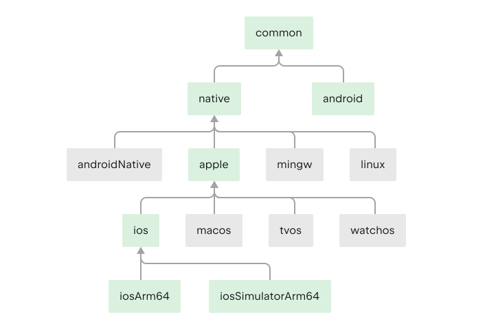
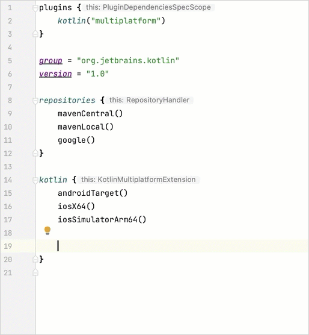
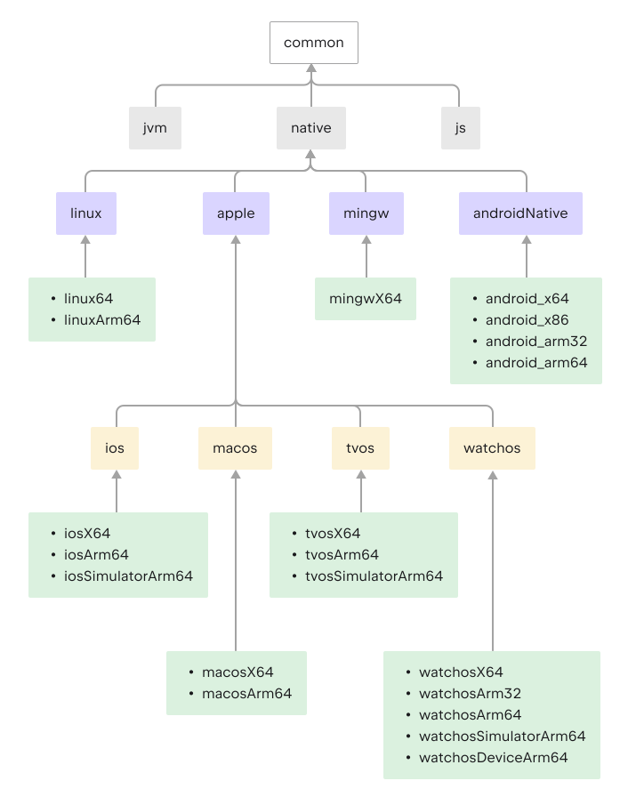

Kotlin 1.9.20-RC2 的新特性
This document doesn't cover all of the features of the Early Access Preview (EAP) release, but it highlights the latest ones and some major improvements.
See the full list of changes in the GitHub changelog.
The Kotlin 1.9.20-RC2 release is out! Here are some highlights from this preview version:
- Preview kapt compiler plugin with K2
- New default hierarchy template for setting up multiplatform projects
- Full support for the Gradle Configuration cache in Kotlin Multiplatform
- Custom memory allocator enabled by default in Kotlin/Native
- Performance improvements for the garbage collector in Kotlin/Native
- Support for Xcode 15 in Kotlin/Native
- New and renamed targets in Kotlin/Wasm
- Support for the WASI API in the standard library for Kotlin/Wasm
IDE support
The Kotlin plugins that support 1.9.20-RC2 are available for:
| IDE | Supported versions |
|---|---|
| IntelliJ IDEA | 2023.1.x, 2023.2.x |
| Android Studio | Hedgehog (2023.1.1 Beta 3), Iguana (2023.2.1 Canary 2) |
New Kotlin K2 compiler updates
Support for Kotlin/Wasm
Since this release, the Kotlin/Wasm supports the new K2 compiler.
Learn how to enable it in your project.
Preview kapt compiler plugin with K2
Support for K2 in the kapt compiler plugin is Experimental. Opt-in is required (see details below), and you should use it only for evaluation purposes.
In 1.9.20-RC, you can try using the kapt compiler plugin with the K2 compiler.
To use the K2 compiler in your project, add the following options to your gradle.properties file:
kotlin.experimental.tryK2=true
kapt.use.k2=true
Alternatively, you can enable K2 for kapt by completing the following steps:
- In your
build.gradle.ktsfile, set the language version to2.0. - In your
gradle.propertiesfile, addkapt.use.k2=true.
If you encounter any issues when using kapt with the K2 compiler, please report them to our issue tracker.
How to enable the Kotlin K2 compiler
To enable and test the Kotlin K2 compiler, use the new language version with the following compiler option:
-language-version 2.0
You can specify it in your build.gradle.kts file:
kotlin {
sourceSets.all {
languageSettings {
languageVersion = "2.0"
}
}
}
Leave your feedback on the new K2 compiler
We would appreciate any feedback you may have!
- Provide your feedback directly to K2 developers on Kotlin Slack – get an invite and join the #k2-early-adopters channel.
- Report any problems you faced with the new K2 compiler on our issue tracker.
- Enable the Send usage statistics option to allow JetBrains to collect anonymous data about K2 usage.
Kotlin Multiplatform
Template for configuring multiplatform projects
Starting with Kotlin 1.9.20-RC2, the Kotlin Gradle plugin automatically creates shared source sets for popular multiplatform scenarios. If your project setup is one of them, you don't need to configure the source set hierarchy manually. Just explicitly specify the targets necessary for your project.
Setup is now easier thanks to the default hierarchy template, a new feature of the Kotlin Gradle plugin. It's a predefined template of a source set hierarchy built into the plugin. It includes intermediate source sets that Kotlin automatically creates for the targets you declared. See the full template.
Create your project easier
Consider a multiplatform project that targets both Android and iPhone devices and is developed on an Apple silicon MacBook. Compare how this project is set up between different versions of Kotlin:
| Kotlin 1.9.0 and earlier (a standard setup) | Kotlin 1.9.20-RC2 |
| ```kotlin kotlin { androidTarget() iosArm64() iosSimulatorArm64() sourceSets { val commonMain by getting val iosMain by creating { dependsOn(commonMain) } val iosArm64Main by getting { dependsOn(iosMain) } val iosSimulatorArm64Main by getting { dependsOn(iosMain) } } } ``` | ```kotlin kotlin { androidTarget() iosArm64() iosSimulatorArm64() // The iosMain source set is created automatically } ``` |
Notice how the use of the default hierarchy template considerably reduces the amount of boilerplate code needed to set up your project.
When you declare the androidTarget, iosArm64, and iosSimulatorArm64 targets in your code, the Kotlin Gradle plugin finds
suitable shared source sets from the template and creates them for you. The resulting hierarchy looks like this:

{thumbnail="true" width="350" thumbnail-same-file="true"}Green source sets are actually created and included in the project, while gray ones from the default template are ignored.
Enjoy improved tooling support
To make it easier to work with the created project structure, IntelliJ IDEA now provides completion for source sets created with the default hierarchy template:

The IDE also warns you if you attempt to access a source set that doesn't exist because you haven't declared the respective target.
In the example below, there is no JVM target (only androidTarget, which is not the same). But let's try to use the jvmMain source set
and see what happens:
kotlin {
androidTarget()
iosArm64()
iosSimulatorArm64()
sourceSets {
jvmMain {
}
}
}
In this case, Kotlin reports a warning in the build log:
w: Accessed 'source set jvmMain' without registering the jvm target:
kotlin {
jvm() /* <- register the 'jvm' target */
sourceSets.jvmMain.dependencies {
}
}
Set up the target hierarchy
Starting with Kotlin 1.9.20-RC2, the default hierarchy template is automatically enabled. In most cases, no additional setup is required.
However, if you're migrating existing projects created before 1.9.20, you might encounter a warning if you had previously
introduced intermediate sources manually with dependsOn() calls. To solve this issue, do the following:
If your intermediate source sets are currently covered by the default hierarchy template, remove all manual
dependsOn()calls and source sets created withby creatingconstructions.To check the list of all default source sets, see the full hierarchy template.
If you want to have additional source sets that the default hierarchy template doesn't provide, for example between JS and the JVM, adjust the hierarchy by reapplying the template explicitly with
applyDefaultHierarchyTemplate()and configuring additional source sets manually as usual withdependsOn():
kotlin {
jvm()
js { browser() }
iosArm64()
iosSimulatorArm64()
// Apply the default hierarchy explicitly. It'll create, for example, the iosMain source set:
applyDefaultHierarchyTemplate()
sourceSets {
// Create an additional jsAndJvmMain source set
val jsAndJvmMain by creating {
dependsOn(commonMain.get())
}
jsMain.get().dependsOn(jsAndJvmMain)
jvmMain.get().dependsOn(jsAndJvmMain)
}
}
If there are already source sets in your project that have the exact same names as those generated by the template but that are shared among different sets of targets, there's currently no way to modify the default
dependsOnrelations between the template's source sets.One option you have here is to find different source sets for your purposes, either in the default hierarchy template or ones that have been manually created. Another is to opt out of the template completely.
To opt out, add
kotlin.mpp.applyDefaultHierarchyTemplate=falseto yourgradle.propertiesand configure all other source sets manually.We're currently working on an API for creating your own hierarchy templates to simplify the setup process in such cases.
See the full hierarchy template
When you declare the targets to which your project compiles, the plugin picks the shared source sets from the template accordingly and creates them in your project.

This example only shows the production part of the project, omitting the
Mainsuffix (for example, usingcommoninstead ofcommonMain). However, everything is the same for*Testsources as well.
Full support for the Gradle configuration cache in Kotlin Multiplatform
Previously, we introduced a preview of the Gradle configuration cache, which was available for Kotlin multiplatform libraries. With 1.9.20-RC2, the Kotlin Multiplatform plugin takes a step further.
It now supports the Gradle configuration cache in the Kotlin CocoaPods Gradle plugin,
as well as in the integration tasks that are necessary for Xcode builds, like embedAndSignAppleFrameworkForXcode.
Now all multiplatform projects can take advantage of the improved build time. The Gradle configuration cache speeds up the build process by reusing the results of the configuration phase for subsequent builds. For more details and setup instructions, see the Gradle documentation.
Kotlin/Native
- Custom memory allocator enabled by default
- Performance improvements for garbage collector
- Incremental compilation of klib artifacts
Custom memory allocator enabled by default
Kotlin 1.9.20-RC2 comes with the new memory allocator enabled by default. It's designed to replace the previous default allocator,
mimaloc, to make garbage collection more efficient and improve the runtime performance of the Kotlin/Native memory manager.
The new custom allocator divides system memory into pages, allowing independent sweeping in consecutive order. Each allocation becomes a memory block within a page, and the page keeps track of block sizes. Different page types are optimized for various allocation sizes. The consecutive arrangement of memory blocks ensures efficient iteration through all allocated blocks.
When a thread allocates memory, it searches for a suitable page based on the allocation size. Threads maintain a set of pages for different size categories. Typically, the current page for a given size can accommodate the allocation. If not, the thread requests a different page from the shared allocation space. This page may already be available, require sweeping, or have to be created first.
The new allocator allows for multiple independent allocation spaces simultaneously, which will enable the Kotlin team to experiment with different page layouts to improve performance even further.
How to enable the custom memory allocator
Starting with Kotlin 1.9.20-RC2, the new memory allocator is the default. No additional setup is required.
If you experience high memory consumption, you can switch back to mimaloc or the system allocator with -Xallocator=mimalloc
or -Xallocator=std in your Gradle build script. Please report such issues in YouTrack to help
us improve the new memory allocator.
For the technical details of the new allocator's design, see this README.
Performance improvements for the garbage collector
The Kotlin team continues to improve the performance and stability of the new Kotlin/Native memory manager. This release brings a number of significant changes to the garbage collector (GC), including the following 1.9.20-RC2 highlights:
Full parallel mark to reduce the pause time for the GC
Previously, the default garbage collector performed only a partial parallel mark. When the mutator thread was paused, it would mark the GC's start from its own roots, like thread-local variables and the call stack. Meanwhile, a separate GC thread was responsible for marking the start from global roots, as well as the roots of all mutators that were actively running the native code and therefore not paused.
This approach worked well in cases where there were a limited number of global objects and the mutator threads spent a considerable amount of time in a runnable state executing Kotlin code. However, this is not the case for typical iOS applications.
Now the GC uses a full parallel mark that combines paused mutators, the GC thread, and optional marker threads to process the mark queue. By default, the marking process is performed by:
- Paused mutators. Instead of processing their own roots and then being idle while not actively executing code, they contribute to the whole marking process.
- The GC thread. This ensures that at least one thread will perform marking.
This new approach makes the marking process more efficient, reducing the pause time of the GC.
Tracking memory in big chunks to improve the allocation performance
Previously, the GC scheduler tracked the allocation of each object individually. However, neither the new default custom
allocator nor the mimalloc memory allocator allocates separate storage for each object; they allocate large areas for several objects at once.
In Kotlin 1.9.20-RC2, the GC tracks areas instead of individual objects. This speeds up the allocation of small objects by reducing the number of tasks performed on each allocation and, therefore, helps to minimize the garbage collector's memory usage.
Incremental compilation of klib artifacts
This feature is Experimental. It may be dropped or changed at any time. Opt-in is required (see details below). Use it only for evaluation purposes. We would appreciate your feedback on it in YouTrack.
Kotlin 1.9.20-RC2 introduces a new compilation time optimization for Kotlin/Native.
The compilation of klib artifacts into native code is now partially incremental.
When compiling Kotlin source code into native binary in debug mode, the compilation goes through two stages:
- Source code is compiled into
klibartifacts. klibartifacts, along with dependencies, are compiled into a binary.
To optimize the compilation time in the second stage, the team has already implemented compiler caches for dependencies.
They are compiled into native code only once, and the result is reused every time a binary is compiled.
But klib artifacts built from project sources were always fully recompiled into native code at every project change.
With new incremental compilation, if the project module change causes only a partial recompilation of source code into
klib artifacts, just a part of the klib is further recompiled into a binary.
To enable incremental compilation, add the following option to your gradle.properties file:
kotlin.incremental.native=true
If you face any issues, report such cases to YouTrack.
Support for Xcode 15
Kotlin/Native 1.9.20-RC2 supports Xcode 15.0 – the latest version of Xcode. As part of this, platform libraries have been updated to reflect the changes to Objective-C frameworks for Apple targets. Feel free to update your Xcode and continue working on your Kotlin projects for Apple operating systems.
Kotlin/Wasm
- New
wasm-wasitarget, and the renaming of thewasmtarget towasm-js - Support for the WASI API in standard library
Kotlin Wasm is Experimental. It may be changed at any time. Use it only for evaluation purposes.
We would appreciate your feedback on it in YouTrack.
New wasm-wasi target, and the renaming of the wasm target to wasm-js
In this release, we're introducing a new target for Kotlin/Wasm – wasm-wasi. We're also renaming the wasm target to wasm-js.
In the Gradle DSL, these targets are available as wasmWasi {} and wasmJs {}, respectively.
To use these targets in your project, update the build.gradle.kts file:
kotlin {
wasmWasi {
// ...
}
wasmJs {
// ...
}
}
The previously introduced wasm {} block has been deprecated in favor of wasmJs {}.
To migrate your existing Kotlin/Wasm project, do the following:
- In the
build.gradle.ktsfile, rename thewasm {}block towasmJs {}. - In your project structure, rename the
wasmMaindirectory towasmJsMain.
Support for the WASI API in the standard library
In this release, we have included support for WASI, a system interface for the Wasm platform. WASI support makes it easier for you to use Kotlin/Wasm outside of browsers, for example in server-side applications, by offering a standardized set of APIs for accessing system resources. In addition, WASI provides capability-based security – another layer of security when accessing external resources.
To run Kotlin/Wasm applications, you need a VM that supports Wasm Garbage Collection (GC), for example, Node.js or Deno. Wasmtime, WasmEdge, and others are still working towards full Wasm GC support.
To import a WASI function, use the @WasmImport annotation:
import kotlin.wasm.WasmImport
@WasmImport("wasi_snapshot_preview1", "clock_time_get")
private external fun wasiRawClockTimeGet(clockId: Int, precision: Long, resultPtr: Int): Int
You can find a full example in our GitHub repository.
It isn't possible to use interoperability with JavaScript, while targeting
wasmWasi.
How to update to Kotlin 1.9.20-RC2
Install Kotlin 1.9.20-RC2 in any of the following ways:
- If you use the Early Access Preview update channel, the IDE will suggest automatically updating to 1.9.20-RC2 as soon as it becomes available.
- If you use the Stable update channel, you can change the channel to Early Access Preview at any time by selecting Tools | Kotlin | Configure Kotlin Plugin Updates in your IDE. You'll then be able to install the latest preview release. Check out these instructions for details.
Once you've installed 1.9.20-RC2 don't forget to change the Kotlin version to 1.9.20-RC2 in your build scripts.